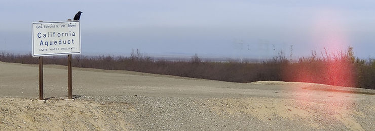

April 5th, 2022
When we seek to understand water on earth there are two types of variables, units of time and units of water. Combining the units helps us quantify water: Gallons per minute, acre-feet per year, cubic-feet per second, inches per hour, etc.

Time is the constant by which everything is relativized. Combining time and water on paper helps us quantify the resource, but combining time and water on earth yields life. The most important commonly accepted requirement for planetary life is water in liquid form. “In living organisms water is active in the transportation of nutrients and other chemicals, in determining the structure and properties of large molecules such as proteins and nucleic acids, in the biochemical reactions taking place in cells and in tissue, and in heat-regulation processes such as moisture absorption and transpiration” [1]. All of this to say, humans and the environment need water to continue living. Whether the outcome is the loss of a species or the loss of profits, when water is removed death follows. Corporations, communities and commodities all die without water.
Barring Hindenburg style contraptions and catastrophes, it is not possible to create or destroy water. Unlike wealth, when we combine water and time, we do not get more or less water. Water is a net-zero resource. The basic truth of net-zero water has been successfully ignored by the western US for its entire history. It has been eschewed for a collection of different truths that center around the domestication and manipulation of water. Originally standing in support of individual land ownership, democracy and the manifest destiny of the United States, these truths were used as motivation for a large number of successful and unsuccessful governmental efforts that reshaped water in California [2]. Ignoring the basic truth of net-zero water has yielded some of the most productive farmland the world has ever seen. It has also quenched the thirst of urban economic engines of the western US. The issue is this ignorance has led to permanent damage to ecosystems, reduction of groundwater storage, and subsidence. Our situation today can be traced to the early implicit rejection of net-zero water.
Even though the influence of history is clear, current issues surrounding water have not been caused solely by our past actions. Issues today primarily stem from the fact that the actions we have been taking surrounding water haven’t kept up with the changing units of water and time. From the moment the first river was diverted, the water cycle and our understanding of it has been ever changing. We have made significant changes to the landscape of water in order to accomplish goals. To solve our persistent issues we need to make equally significant changes to our role in the water cycle by embracing the reality of net-zero water.
The value of water is not an easily measurable quantity. Water may be a net-zero resource, but allocation of water is not a zero-sum game. This means the value of water is worth more or less depending on the circumstance. When we seek to understand the qualities and value of water on earth there are infinite categories: number of fish spawned, houses to be built, pounds of grapes harvested, dollars of loss due to drought, etc. Not only are there a wide variety of subjective values, but a time component exists for each value. Adding time means adding complexity and non-linearity to each unit of value.
Today, value is most commonly measured in wealth. Something that almost all people can agree on is that the value of water is too low. Why has the value been historically so low? It has to do with long-standing incentives, governance structures and property rights. What is certain today is that the value of water is going up. A quick skim of UC Davis’s Cost and Return Studies for a variety of crops across California suggests anywhere from $90 to $200 per acre-foot for irrigation costs. The cost of groundwater has historically been tied to the cost of extraction. Due to a combination of economic, technological, environmental and legislative factors we have reached a temporary ceiling on our ability to extract water from future generations and the environment. There is a good bet that irrigation costs will go up in the 95 medium and high priority basins currently in the Sustainable Groundwater Management Act’s Basin Prioritization.
Drawing inspiration from wealth management to better manage water can be useful. When looking at the long term returns of a fund it is typical to use the geometric mean. Analysts use the geometric mean because it takes into account compounding that occurs from period to period. For example, over a 10 year time frame of an investment, outstanding returns during the eighth year would not be as beneficial as if they had occurred during the first year. Similar to gains, several years of losses experienced can compound to produce outsized effects. What happens when the impacts of drought, subsidence and over extraction are compounded? Lack of safe drinking water for disadvantaged communities, permanent reduction of groundwater storage and an altering of environmental ecosystems. Negative or positive impacts of water governance and management compound in ways that are only evident when we look long term, particularly through the lens of a geometric mean.
There is a reason why The Almond Board has funded 239 water research projects and counting. It is the same reason California households have $1 billion in unpaid water bills. It is the same reason groundwater pumping caps are being established to comply with SGMA. It is the same reason desalination plants are being built in Huntington Beach. It is the same reason there continue to be pushes for more water measures on the ballot in California. It is the same reason forecasts are predicting over half a million acres of farmland will need to be fallowed in the San Joaquin valley. The reason is that the forgotten property of water, its net-zero nature, is being realized.
References:
[1] Water, Something Peculiar, J. Lyklema and T.E.A Van Hylckama, WRD Bulletin (April-June 1975), pg. 64-68
[2] Ruling the Waters : California’s Kern River, the Environment, and the Making of Western Water Law, D. Littlefield (2020), pg. 13